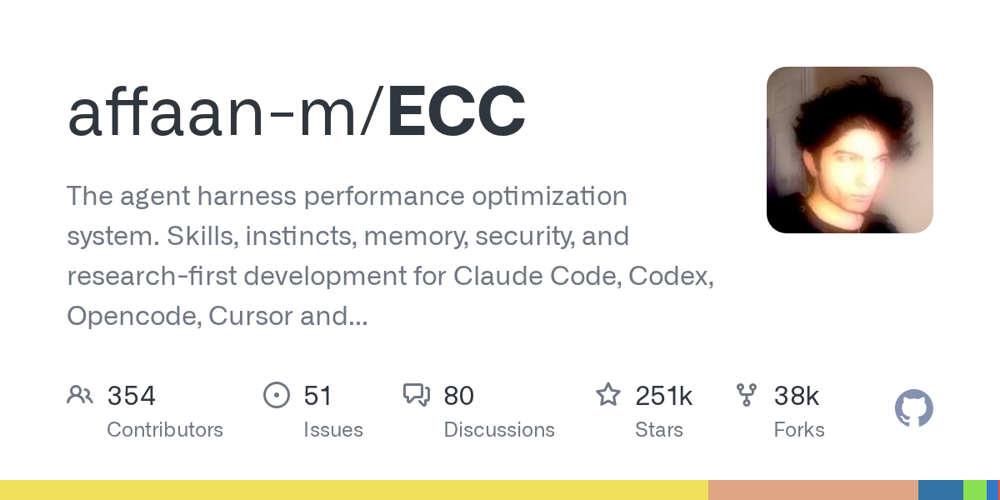

04 GitHub
affaan-m/ECC
코딩 에이전트의 일하는 순서를 표준화하는 ECC
★ 250,556JavaScriptMIT 사내 사용 가능릴리스 v2.2.0 (08.28)최근 활동 09.05테스트 있음예제 있음AGENTS.md 있음

이 저장소는 코딩 에이전트의 작업 순서를 표준화하는 도구다. 단순히 답을 생성하는 대신, 먼저 계획하고 테스트한 뒤 구현과 검토를 거치게 설계했다. Claude Code와 Codex 지원을 앞세우고, 다른 에이전트에는 제한된 어댑터를 제공한다. 설치 방법을 겹쳐 쓰지 말라는 운영 주의도 상세히 적어 두었다.
무엇을 하는 물건인가
ECC는 코딩 에이전트가 일하는 절차를 묶어 주는 설치형 도구다. 에이전트가 바로 코드를 쓰기보다 계획, 테스트, 구현, 리뷰, 검증 순서로 움직이게 만든다. 매번 사람마다 다른 작업 지시서를 붙이는 대신, 입사한 팀원에게 표준 업무 절차와 서식을 먼저 깔아 주는 방식에 가깝다. 반복해서 잘 먹힌 작업법은 스킬과 워크플로로 남길 수 있다.
스펙과 도입 조건
- 언어는 JavaScript이며, 범용 패키지는 Node.js 18 이상이 필요하다.
- 설치 형태는 npm 패키지 기반 가이드 설치와 각 하네스용 플러그인·동기화 경로를 제공한다.
- 의존 서비스는 Claude Code 플러그인 설정에 Git과 Claude Code 2.1 이상이 필요하다고 적었다. 외부 API 키 필요 여부는 발췌에 없다.
- 라이선스는 MIT다.
- 성숙도는 v2.2.0 릴리스가 있고, 2.2에서 Claude Code, Codex, Kimi Code용 가이드 패키지 설치를 추가했다.
이럴 때 쓰면 좋다
- 사내 개발팀이 Claude Code로 반복되는 수정 작업을 맡기되 테스트와 리뷰 순서를 강제하고 싶을 때 유용하다.
- 여러 팀이 Codex와 Claude Code를 함께 쓰며 프롬프트 품질 편차를 줄이고 공통 작업 절차를 맞출 때 적합하다.
- 보안성 점검이나 빌드 복구처럼 자주 되풀이되는 개발 작업을 재사용 가능한 스킬로 축적하려는 플랫폼 팀에 맞는다.
핵심 기능
- 68개 에이전트, 286개 스킬, 94개 레거시 명령 호환층을 제공한다.
- 계획, 테스트, 구현, 리뷰, 검증, 기억, 개선 흐름을 에이전트 기본 작업 절차로 넣는다.
- 훅, 규칙, 메모리, 지속 학습, AgentShield 보안 스캔을 묶어 반복 작업을 재사용 가능하게 만든다.
대안 대비 차별점
이 저장소는 단일 프롬프트 모음보다 설치형 엔지니어링 체계를 앞세운다. Claude Code에서 가장 잘 맞고, Codex는 새 방식과 기존 방식 둘 다 쓸 수 있다. Cursor, OpenCode, Gemini, Zed, Copilot 등에는 기능이 제한된 어댑터를 둔다. 대신 설치 방법을 한 하네스에 중복 적용하면 스킬과 설정이 겹칠 수 있어 도입 난이도는 단순 프롬프트 세트보다 높다.
사내 도입 체크
- 외부 API 호출 여부는 발췌에 없다. 연결하는 코딩 에이전트의 정책과 별도로 확인이 필요하다.
- 코드와 규칙, 메모리 파일이 각 개발자 환경에 저장된다. 프로젝트 정보가 어떤 경로에 남는지 검토해야 한다.
- 유지보수 주체는 affaan-m 개인 계정이다.
- Claude Code, Codex, Copilot 같은 상용 코딩 도구를 대체한다기보다, 그 위에 절차와 스킬을 얹는 보완재에 가깝다.
주요 용어
원문 정보
제목: affaan-m/ECC
최근 활동: 2026.09.05
출처 URL: https://github.com/affaan-m/ECC